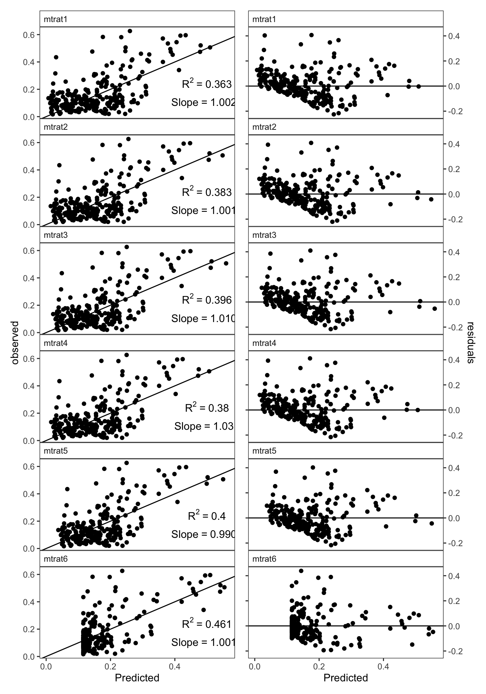
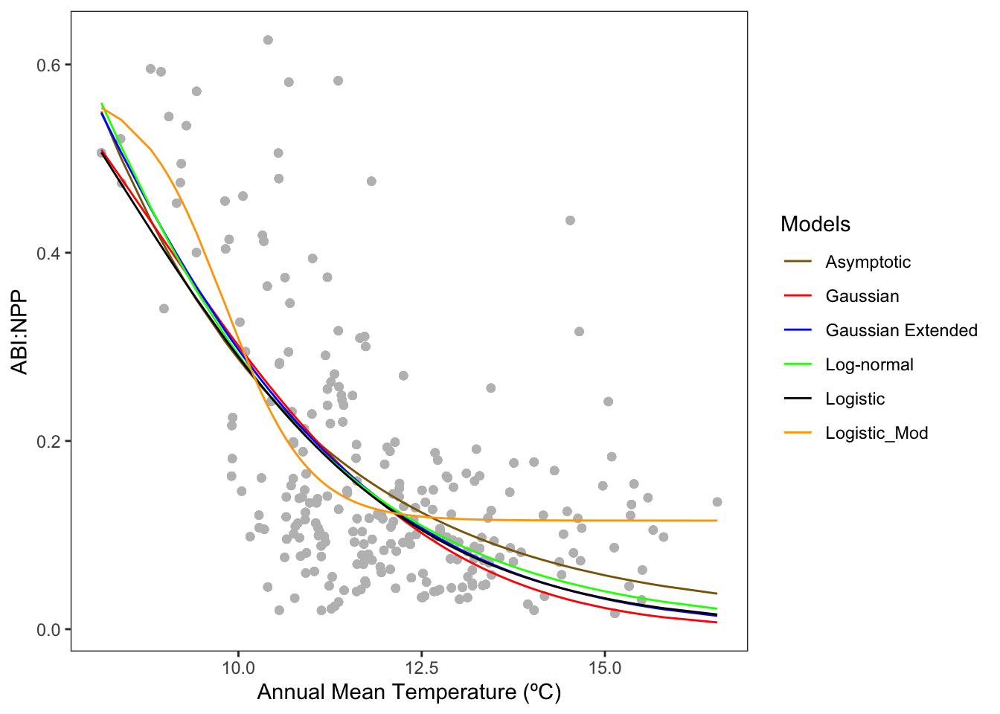
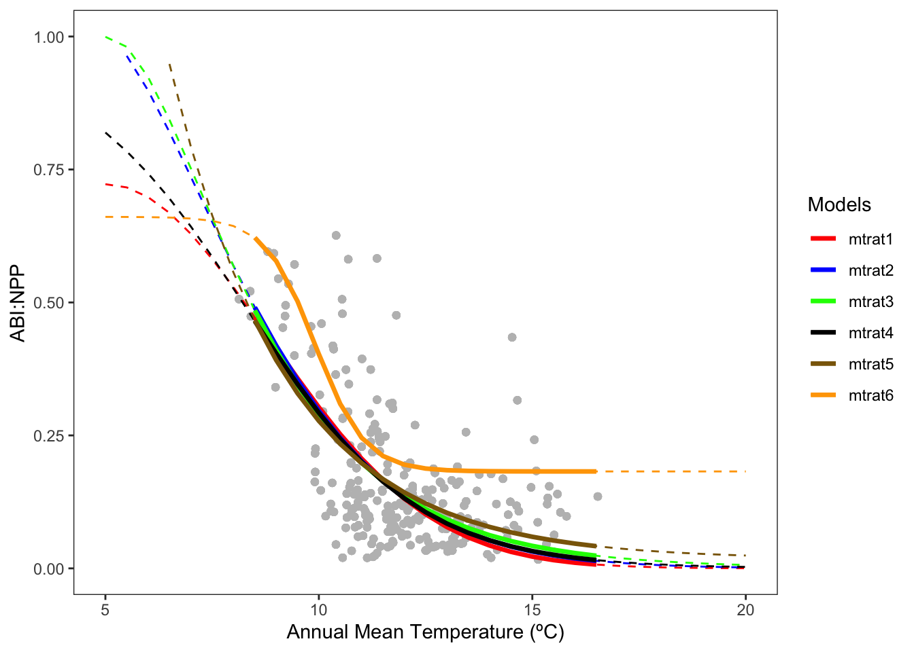
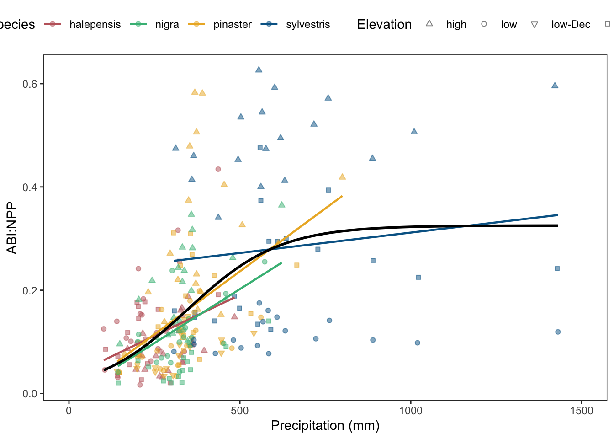
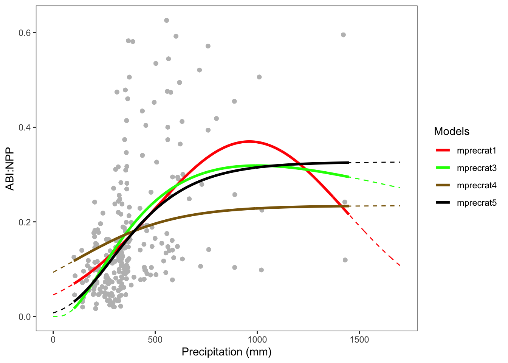
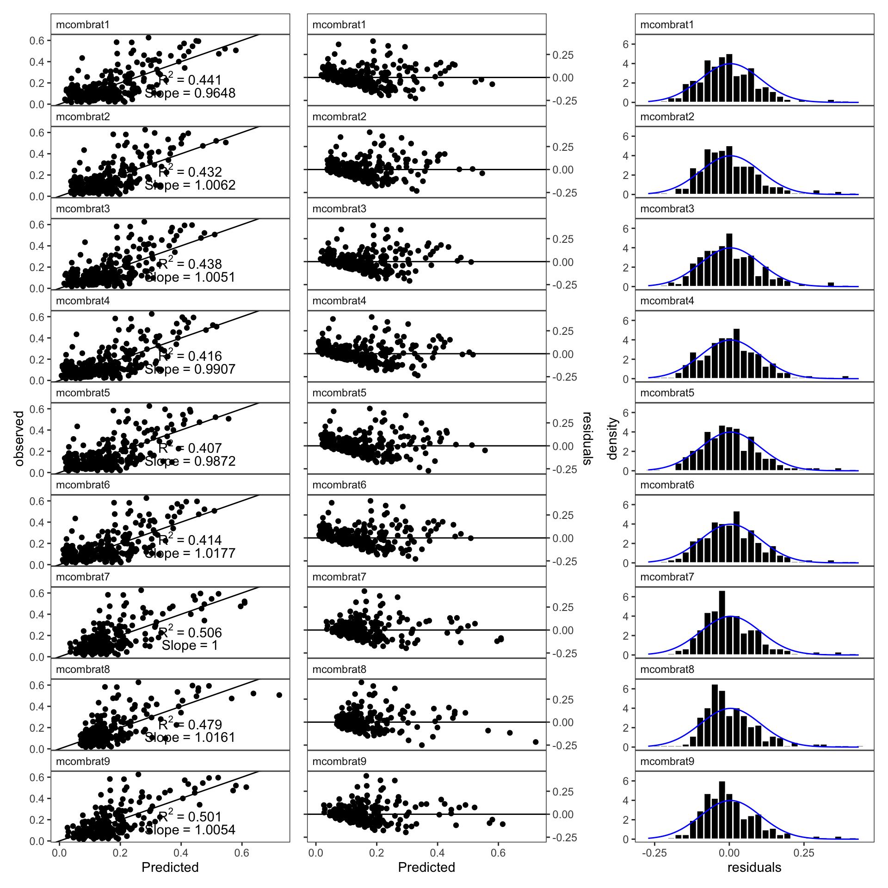

Modelling Ratio ABI:NPP
Last updated: 2024-07-19
Checks: 7 0
Knit directory:
adaptamed_dendroanalysis/
This reproducible R Markdown analysis was created with workflowr (version 1.7.1). The Checks tab describes the reproducibility checks that were applied when the results were created. The Past versions tab lists the development history.
Great! Since the R Markdown file has been committed to the Git repository, you know the exact version of the code that produced these results.
Great job! The global environment was empty. Objects defined in the global environment can affect the analysis in your R Markdown file in unknown ways. For reproduciblity it’s best to always run the code in an empty environment.
The command set.seed(20220407) was run prior to running the code in the R Markdown file.
Setting a seed ensures that any results that rely on randomness, e.g.
subsampling or permutations, are reproducible.
Great job! Recording the operating system, R version, and package versions is critical for reproducibility.
Nice! There were no cached chunks for this analysis, so you can be confident that you successfully produced the results during this run.
Great job! Using relative paths to the files within your workflowr project makes it easier to run your code on other machines.
Great! You are using Git for version control. Tracking code development and connecting the code version to the results is critical for reproducibility.
The results in this page were generated with repository version 64903ef. See the Past versions tab to see a history of the changes made to the R Markdown and HTML files.
Note that you need to be careful to ensure that all relevant files for the
analysis have been committed to Git prior to generating the results (you can
use wflow_publish or wflow_git_commit). workflowr only
checks the R Markdown file, but you know if there are other scripts or data
files that it depends on. Below is the status of the Git repository when the
results were generated:
Ignored files:
Ignored: .DS_Store
Ignored: .Rhistory
Ignored: .Rproj.user/
Ignored: data/geoinfo/grids/
Ignored: data/raw/.DS_Store
Ignored: data/raw/remote_sensing/old/
Ignored: output/.DS_Store
Unstaged changes:
Modified: analysis/modelling_abi.Rmd
Modified: analysis/modelling_ratio_selected.Rmd
Modified: data/models_ratio_all_summary.csv
Modified: data/models_ratio_combined_summary.csv
Modified: data/models_ratio_effect_precipitation.csv
Modified: data/models_ratio_effect_temperature.csv
Modified: data/models_ratio_prec_summary.csv
Modified: data/models_ratio_predicted_precipitation.csv
Modified: data/models_ratio_predicted_temperature.csv
Modified: data/models_ratio_tmed_summary.csv
Modified: output/models/mcombrat1.txt
Modified: output/models/mcombrat2.txt
Modified: output/models/mcombrat5.txt
Modified: output/models/mcombrat6.txt
Modified: output/models/mcombrat7.txt
Modified: output/models/mcombrat8.txt
Modified: output/models/mcombrat9.txt
Modified: output/models/mprecrat1.txt
Modified: output/models/mprecrat3.txt
Modified: output/models/mprecrat4.txt
Modified: output/models/mprecrat5.txt
Modified: output/models/mtrat1.txt
Modified: output/models/mtrat2.txt
Modified: output/models/mtrat3.txt
Modified: output/models/mtrat4.txt
Modified: output/models/mtrat5.txt
Modified: output/models/mtrat6.txt
Modified: output/models/multiplicative_tmed_logisticmod_prec_lognormal.txt
Modified: output/models/multiplicative_tmed_lognormal_prec_lognormal.txt
Modified: output/models/univariate_prec_lognormal.txt
Modified: output/models/univariate_temp_logisticmod.txt
Modified: output/models/univariate_temp_lognormal.txt
Note that any generated files, e.g. HTML, png, CSS, etc., are not included in this status report because it is ok for generated content to have uncommitted changes.
These are the previous versions of the repository in which changes were made
to the R Markdown (analysis/modelling_ratio.Rmd) and HTML (docs/modelling_ratio.html)
files. If you’ve configured a remote Git repository (see
?wflow_git_remote), click on the hyperlinks in the table below to
view the files as they were in that past version.
| File | Version | Author | Date | Message |
|---|---|---|---|---|
| Rmd | 64903ef | ajpelu | 2024-07-19 | wflow_publish("analysis/modelling_ratio.Rmd") |
| html | be380ab | ajpelu | 2024-07-03 | Build site. |
| Rmd | 65cbb7a | ajpelu | 2024-07-03 | add akaike weigthts |
| html | 360e09c | ajpelu | 2024-07-01 | Build site. |
| Rmd | 5b0de89 | ajpelu | 2024-07-01 | wflow_publish("analysis/modelling_ratio.Rmd") |
| Rmd | 09dabc6 | ajpelu | 2024-06-27 | update figure |
| html | eb50056 | ajpelu | 2024-06-25 | Build site. |
| Rmd | bd34d6a | ajpelu | 2024-06-25 | wflow_publish("analysis/modelling_ratio.Rmd") |
| Rmd | 2c584f6 | ajpelu | 2024-06-19 | change fig3 |
| html | bb3154b | ajpelu | 2024-06-19 | Build site. |
| Rmd | 4436fc7 | ajpelu | 2024-06-19 | wflow_publish("analysis/modelling_ratio.Rmd") |
| html | 69ade1e | ajpelu | 2024-06-18 | Build site. |
| Rmd | 071893f | ajpelu | 2024-06-18 | wflow_publish("analysis/modelling_ratio.Rmd") |
| html | 071893f | ajpelu | 2024-06-18 | wflow_publish("analysis/modelling_ratio.Rmd") |
| html | 6a190d0 | ajpelu | 2024-06-18 | Build site. |
| Rmd | c5bb724 | ajpelu | 2024-06-18 | wflow_publish("analysis/modelling_ratio.Rmd") |
| html | f29fd1f | ajpelu | 2024-06-14 | Build site. |
| Rmd | d5a14c7 | ajpelu | 2024-06-14 | add model abi |
| html | caf1a47 | ajpelu | 2024-06-14 | Build site. |
| Rmd | f7de2fb | ajpelu | 2024-06-14 | wflow_publish("analysis/modelling_ratio.Rmd") |
| html | 38791de | ajpelu | 2024-06-13 | Build site. |
| Rmd | 811058b | ajpelu | 2024-06-13 | wflow_publish("analysis/modelling_ratio.Rmd") |
1 Temperature
\[(ABI:NPP)_i=MR \times g(T_{med}) + \epsilon_i\] where:
- \((ABI:NPP)_i\) es el valor del ratio de ABI:NPP para cada sitio y año
- \(MR\) es un parámetro que representa el máximo ratio ABI:NPP (adimensional)
- \(\epsilon_i\) es el error aleatorio para cada observación \(i\)
- \(g(T_{med})\) es una función con valores entre 0 y 1, que depende de la temperatura
Esta \(g(T_{med})\) puede tomar diferentes formas (es lo que tenemos que buscar)
Al aumentar la temperatua, se disminuye el ratio, esto es, se distribuye menos cantidad de C a la parte aérea. ¿Que explicación le podemos dar a esto?
1.0.1 Funciones propuestas
- Gaussian (mtrat1) \[g(T_{med})=\exp \left[ -\frac{1}{2} \left(\frac{T_{med}-OT_{med}} {b}\right)^2 \right]\]
siendo \(OT_{med}\) el valor óptimo de \(T_{med}\) al cual ocurre el máximo Ratio \((ABI:NPP)_i\); y \(b\) es la desviación estándar o amplitud de la función.
Gaussian Extended (mtrat2) \[g(T_{med})=\exp \left[ -\frac{1}{2} \left(\frac{T_{med}-OT_{med}} {b}\right)^a \right]\] con el parámetro \(a\) que permite hacer a la función flexible para ajustar la kurtosis
Log-normal (mtrat3) \[g(T_{med})=\exp \left[ -\frac{1}{2} \left(\frac{\log{(\frac{T_{med}}{OT_{med}}}) }{b}\right)^2 \right]\]
Logistic (mtrat4)
\[g(T_{med})=a + \frac{b}{1+\exp \left(-c \times (T_{med} - d) \right) } \]
where, \(a\) es el valor de la asíntota inferior; \(b\) es la distancia vertical entre la asíntota superior e inferior; \(c\) es la la tasa de cambio, y \(d\) es la localización del punto de inflexión.
- Asintótica (mtrat5)
\[g(T_{med})= Asym + \left(R0 - Asym\right) \times \exp(- \exp ^{lrc \times T_{med}})\] siendo \(Asym\) el valor de asíntota horizontal; \(R0\) el valor de la variable respuesta cuando la \(T_{med}\) es cero; y \(lrc\) es la tasa de cambio
The error term in the model
\[(ABI:NPP)_i=MR \times g(T_{med}) + \epsilon_i\] is assumed to follows a normal distribution \(\epsilon_i \sim \mathcal{N}(0,1)\)
1.1 Results
| modelo | name_modelo | max_likeli | n_params | aic_cor | aic | R2 | slope | RMSE | deltaAIC |
|---|---|---|---|---|---|---|---|---|---|
| mtrat3 | Log-normal | -233.8832 | 3 | 473.8628 | 473.7664 | 0.3955632 | 1.0106607 | 0.1050982 | 0.0000000 |
| mtrat1 | Gaussian | -233.9593 | 3 | 474.0150 | 473.9186 | 0.3625041 | 1.0027809 | 0.1079341 | 0.1522408 |
| mtrat6 | Logistic_Mod | -233.7331 | 4 | 475.6275 | 475.4663 | 0.4607398 | 1.0015047 | 0.0992703 | 1.7647591 |
| mtrat5 | Asymptotic | -233.8736 | 4 | 475.9084 | 475.7471 | 0.3997470 | 0.9905893 | 0.1047339 | 2.0456377 |
| mtrat2 | Gaussian Extended | -233.9115 | 4 | 475.9842 | 475.8229 | 0.3832884 | 1.0012593 | 0.1061600 | 2.1214317 |
| mtrat4 | Logistic | -233.9200 | 5 | 478.0829 | 477.8400 | 0.3795740 | 1.0309974 | 0.1064792 | 4.2201614 |

1.2 Comparing Ratio ABI:NPP ~ Tmed


2 Precipitation

\[(ABI:NPP)_i=MR \times g(P) + \epsilon_i\] where:
- \((ABI:NPP)_i\) es el valor del ratio de ABI:NPP para cada sitio y año
- \(MR\) es un parámetro que representa el máximo ratio ABI:NPP (adimensional)
- \(\epsilon_i\) es el error aleatorio para cada observación \(i\)
- \(g(P)\) es una función con valores entre 0 y 1, que depende del water balance
Esta \(g(P)\) puede tomar diferentes formas (es lo que tenemos que buscar)
2.0.1 Funciones propuestas
- Gaussian (mprecrat1) \[g(P)=\exp \left[ -\frac{1}{2} \left(\frac{P-P_{opt}} {P_b}\right)^2 \right]\]
siendo \(P_{opt}\) el valor óptimo de \(P\) al cual ocurre el máximo Ratio \((ABI:NPP)_i\); y \(P_b\) es la desviación estándar o amplitud de la función.
Gaussian Extended (mprecrat2) \[g(P)=\exp \left[ -\frac{1}{2} \left(\frac{P - P_{opt}} {P_b}\right)^{P_a} \right]\] con el parámetro \(P_a\) que permite hacer a la función flexible para ajustar la kurtosis
Log-normal (mprecrat3) \[g(P)=\exp \left[ -\frac{1}{2} \left(\frac{\log{(\frac{P}{P{opt}}}) }{Pb}\right)^2 \right]\]
Asintótico
Gompertz
2.1 Results
| modelo | name_modelo | max_likeli | n_params | aic_cor | aic | R2 | slope | RMSE | deltaAIC |
|---|---|---|---|---|---|---|---|---|---|
| mprecrat3 | Log-normal | -234.1547 | 3 | 474.4058 | 474.3094 | 0.2776581 | 0.9972715 | 0.1148924 | 0.0000000 |
| mprecrat1 | Gaussian | -234.1730 | 3 | 474.4424 | 474.3460 | 0.2697096 | 1.0050905 | 0.1155228 | 0.0366037 |
| mprecrat5 | Gompertz | -234.1466 | 4 | 476.4545 | 476.2932 | 0.2811656 | 0.9934385 | 0.1146131 | 2.0487523 |
| mprecrat4 | Asymptotic | -234.4209 | 4 | 477.0032 | 476.8419 | 0.1620251 | 1.0008818 | 0.1237472 | 2.5974079 |

2.2 Comparing Ratio ABI:NPP ~ Prec


3 Temp & Prec models
- Model comb1
- log-normal temperature
- log-normal prec
- Model comb2
- log-normal temperature
- gaus prec
- Model comb3
- log-normal temperature
- gompertz prec
- Model comb4
- gauss temperature
- log-normal prec
- Model comb5
- gauss temperature
- gauss prec
- Model comb6
- gauss temperature
- gompertz prec
- Model comb7
- log-mod temperature
- log-normal prec
- Model comb8
- log-mod temperature
- gauss prec
- Model comb8
- log-mod temperature
- gompertz prec
3.1 Results Multiplicative models
3.1.1 Multiplicative Models
| modelo | name_modelo | max_likeli | n_params | aic_cor | aic | R2 | slope | RMSE | deltaAIC | w |
|---|---|---|---|---|---|---|---|---|---|---|
| mcombrat1 | Temp (Log-normal) | Prec (Log-normal) | -233.78 | 5 | 477.80 | 477.56 | 0.441 | 0.965 | 0.1 | 0.000 | 0.183 |
| mcombrat2 | Temp (Log-normal) | Prec (Gaussian) | -233.80 | 5 | 477.84 | 477.60 | 0.432 | 1.006 | 0.1 | 0.042 | 0.180 |
| mcombrat4 | Temp (Gaussian) | Prec (Log-normal) | -233.84 | 5 | 477.92 | 477.67 | 0.416 | 0.991 | 0.1 | 0.119 | 0.173 |
| mcombrat5 | Temp (Gaussian) | Prec (Gaussian) | -233.86 | 5 | 477.96 | 477.71 | 0.407 | 0.987 | 0.1 | 0.158 | 0.170 |
| mcombrat7 | Temp (Logistic_Mod) | Prec (Log-normal) | -233.63 | 6 | 479.60 | 479.26 | 0.506 | 1.000 | 0.1 | 1.802 | 0.075 |
| mcombrat8 | Temp (Logistic_Mod) | Prec (Gaussian) | -233.69 | 6 | 479.72 | 479.38 | 0.479 | 1.016 | 0.1 | 1.923 | 0.070 |
| mcombrat3 | Temp (Log-normal) | Prec (Gompertz) | -233.79 | 6 | 479.91 | 479.57 | 0.438 | 1.005 | 0.1 | 2.115 | 0.064 |
| mcombrat6 | Temp (Gaussian) | Prec (Gompertz) | -233.84 | 6 | 480.02 | 479.68 | 0.414 | 1.018 | 0.1 | 2.222 | 0.060 |
| mcombrat9 | Temp (Logistic_Mod) | Prec (Gompertz) | -233.64 | 7 | 481.74 | 481.28 | 0.501 | 1.005 | 0.1 | 3.940 | 0.026 |
3.1.2 Multiplicative and Univariate models
| modelo | name_modelo | max_likeli | n_params | aic_cor | aic | R2 | slope | RMSE | w | deltaAIC |
|---|---|---|---|---|---|---|---|---|---|---|
| mtrat3 | Temp (Log-normal) | -233.88 | 3 | 473.86 | 473.77 | 0.396 | 1.011 | 0.11 | 0.205 | 0.000 |
| mtrat1 | Temp (Gaussian) | -233.96 | 3 | 474.02 | 473.92 | 0.363 | 1.003 | 0.11 | 0.190 | 0.152 |
| mprecrat3 | Prec (Log-normal) | -234.15 | 3 | 474.41 | 474.31 | 0.278 | 0.997 | 0.11 | 0.156 | 0.543 |
| mprecrat1 | Prec (Gaussian) | -234.17 | 3 | 474.44 | 474.35 | 0.270 | 1.005 | 0.12 | 0.153 | 0.580 |
| mtrat6 | Temp (Logistic_Mod) | -233.73 | 4 | 475.63 | 475.47 | 0.461 | 1.002 | 0.10 | 0.085 | 1.765 |
| mprecrat5 | Prec (Gompertz) | -234.15 | 4 | 476.45 | 476.29 | 0.281 | 0.993 | 0.11 | 0.056 | 2.592 |
| mcombrat1 | Temp (Log-normal) | Prec (Log-normal) | -233.78 | 5 | 477.80 | 477.56 | 0.441 | 0.965 | 0.10 | 0.029 | 3.936 |
| mcombrat2 | Temp (Log-normal) | Prec (Gaussian) | -233.80 | 5 | 477.84 | 477.60 | 0.432 | 1.006 | 0.10 | 0.028 | 3.977 |
| mcombrat4 | Temp (Gaussian) | Prec (Log-normal) | -233.84 | 5 | 477.92 | 477.67 | 0.416 | 0.991 | 0.10 | 0.027 | 4.055 |
| mcombrat5 | Temp (Gaussian) | Prec (Gaussian) | -233.86 | 5 | 477.96 | 477.71 | 0.407 | 0.987 | 0.10 | 0.026 | 4.094 |
| mcombrat7 | Temp (Logistic_Mod) | Prec (Log-normal) | -233.63 | 6 | 479.60 | 479.26 | 0.506 | 1.000 | 0.10 | 0.012 | 5.737 |
| mcombrat8 | Temp (Logistic_Mod) | Prec (Gaussian) | -233.69 | 6 | 479.72 | 479.38 | 0.479 | 1.016 | 0.10 | 0.011 | 5.859 |
| mcombrat3 | Temp (Log-normal) | Prec (Gompertz) | -233.79 | 6 | 479.91 | 479.57 | 0.438 | 1.005 | 0.10 | 0.010 | 6.051 |
| mcombrat6 | Temp (Gaussian) | Prec (Gompertz) | -233.84 | 6 | 480.02 | 479.68 | 0.414 | 1.018 | 0.10 | 0.009 | 6.158 |
| mcombrat9 | Temp (Logistic_Mod) | Prec (Gompertz) | -233.64 | 7 | 481.74 | 481.28 | 0.501 | 1.005 | 0.10 | 0.004 | 7.876 |

R version 4.3.3 (2024-02-29)
Platform: aarch64-apple-darwin20 (64-bit)
Running under: macOS Sonoma 14.4
Matrix products: default
BLAS: /Library/Frameworks/R.framework/Versions/4.3-arm64/Resources/lib/libRblas.0.dylib
LAPACK: /Library/Frameworks/R.framework/Versions/4.3-arm64/Resources/lib/libRlapack.dylib; LAPACK version 3.11.0
locale:
[1] en_US.UTF-8/en_US.UTF-8/en_US.UTF-8/C/en_US.UTF-8/en_US.UTF-8
time zone: Europe/Madrid
tzcode source: internal
attached base packages:
[1] stats graphics grDevices utils datasets methods base
other attached packages:
[1] kableExtra_1.4.0 likelihood_1.9 nlme_3.1-165 patchwork_1.2.0
[5] lubridate_1.9.3 forcats_1.0.0 stringr_1.5.1 dplyr_1.1.4
[9] purrr_1.0.2 readr_2.1.5 tidyr_1.3.1 tibble_3.2.1
[13] ggplot2_3.5.1 tidyverse_2.0.0 workflowr_1.7.1
loaded via a namespace (and not attached):
[1] gtable_0.3.5 xfun_0.46 bslib_0.7.0 processx_3.8.4
[5] lattice_0.22-6 callr_3.7.6 tzdb_0.4.0 vctrs_0.6.5
[9] tools_4.3.3 ps_1.7.7 generics_0.1.3 parallel_4.3.3
[13] fansi_1.0.6 highr_0.11 pkgconfig_2.0.3 Matrix_1.6-5
[17] lifecycle_1.0.4 farver_2.1.2 compiler_4.3.3 git2r_0.33.0
[21] munsell_0.5.1 getPass_0.2-4 httpuv_1.6.15 htmltools_0.5.8.1
[25] sass_0.4.9 yaml_2.3.9 crayon_1.5.3 later_1.3.2
[29] pillar_1.9.0 jquerylib_0.1.4 whisker_0.4.1 cachem_1.1.0
[33] tidyselect_1.2.1 digest_0.6.36 stringi_1.8.4 bookdown_0.40
[37] splines_4.3.3 labeling_0.4.3 rprojroot_2.0.4 fastmap_1.2.0
[41] grid_4.3.3 colorspace_2.1-0 cli_3.6.3 magrittr_2.0.3
[45] utf8_1.2.4 withr_3.0.0 scales_1.3.0 promises_1.3.0
[49] bit64_4.0.5 timechange_0.3.0 rmarkdown_2.27 httr_1.4.7
[53] bit_4.0.5 hms_1.1.3 evaluate_0.24.0 knitr_1.48
[57] viridisLite_0.4.2 mgcv_1.9-1 rlang_1.1.4 Rcpp_1.0.13
[61] glue_1.7.0 xml2_1.3.6 vroom_1.6.5 svglite_2.1.3
[65] rstudioapi_0.16.0 jsonlite_1.8.8 R6_2.5.1 systemfonts_1.1.0
[69] fs_1.6.4